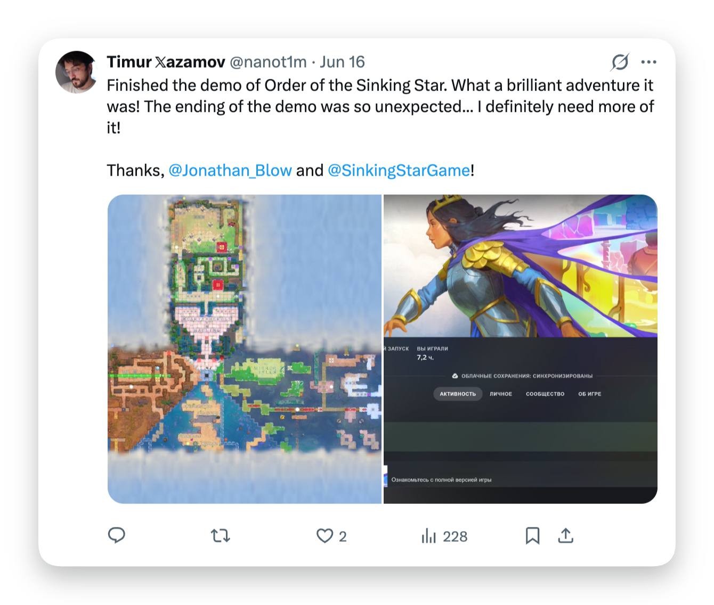

Fast MP4 path
Uses direct video URLs and captured X API media variants before trying slower fallbacks.
Chrome extension for X/Twitter
Tweet LDR adds quiet in-tweet controls for downloading videos when a valid MP4 is available, opening Tweeload as a fallback, or exporting a rounded transparent PNG screenshot.

Uses direct video URLs and captured X API media variants before trying slower fallbacks.
Opens Tweeload with the tweet URL for public posts when X does not expose a usable MP4.
Exports transparent PNG cards with rounded corners, shadow, and hidden extension UI.
Install
chrome://extensions.x.com.